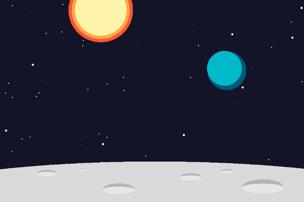
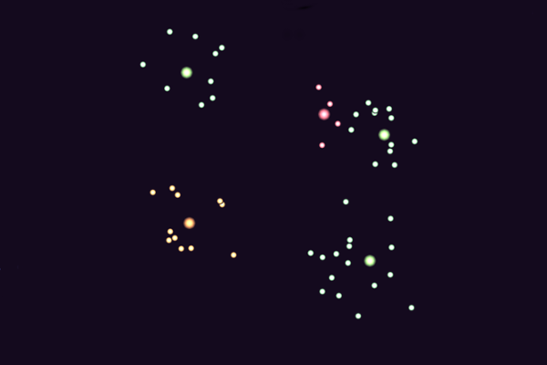
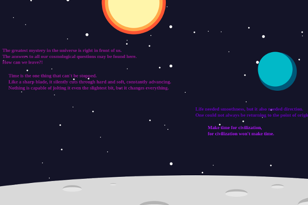

This image is a digital drawing made with javascript with the p5.js library. This drawing uses flat style presents a scene of our sun and earth on the surface of moon. The stars in the background is generated randomly.
This project aims to show a animation of atoms motion with the help of p5.js. The interesting feature of this project is each atom, and each electron in each atom are all generated randomly. You can assign each electron the parameter you want, such as angular velocity, period or etc.
This projects intends to present some quotes from the book "Three Body Problem", in which the background of the story is about space and universe. So I used my first "Space Scene" project as a template and programmed more functions like poem display and interactive planets.
